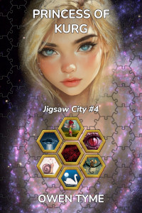

Jigsaw City
Jigsaw City is a sequel series to The Wizard’s Scion, centered around the life of Levi’s daughter, Nicole Jacobs, and her quest to reunite the pieces of a magical city that was broken up millions of years before she was born.
Release Plan
Currently, the plan is to release this series a chapter at a time, on Royal Road. When each volume has been fully posted, they’ll be published both in Ebook and print editions, in many online stores.
For the time being, the Ebooks will not be published via Amazon, because they have exclusivity requirements that preclude free distribution via other channels.
Eventually, the versions in their original, online locations will become short teasers, perhaps six chapters long.
The first chapter of volume one was published on Saturday, March 8, 2025. The rest will follow a chapter at a time, every Tuesday, Thursday and Saturday.
Jigsaw City


Nicole Jacobs is given a small,
hexagonal coin for her twentieth birthday, but during analysis of the
strange, magic trinket, she accidentally copies the magic item’s base
spell into her mind, where it rapidly expands beyond the original
design, slowly consuming her mind from the inside! Nicole reluctantly
seeks out the maker of the item, hoping to find a cure before it’s too
late to save her sanity.
Fey Fighters

On a distant planet tucked away in a
barely explored region of the galaxy, war breaks out between humans that
are forced to land there and the fairies that left Earth during World
War II, because the human race had become too violent to share a planet
with.
Fey Fighters introduces true fairies to the setting, who will also be seen in volume four, where they’ll play a vital role providing exposition and will also play a part in The Great Purpose, due to the linked nature of both demons and fey.
Stone Prophet

 Having accepted
the fact that the City of Kurg is permanently bonded to her mind and
soul, Nicole seeks to collect all of the missing fragments of the
magical city from her home world, but the remaining pieces were
deactivated and don’t speak to her in the irritating way of those among
the stars, leaving her frustrated.
Having accepted
the fact that the City of Kurg is permanently bonded to her mind and
soul, Nicole seeks to collect all of the missing fragments of the
magical city from her home world, but the remaining pieces were
deactivated and don’t speak to her in the irritating way of those among
the stars, leaving her frustrated.
Just as she’s researching ways to locate them, a deactivated piece of the city comes to life and Nicole leads the collection mission, herself. She meets a dwarf history miner that’s just found both a piece of Kurg and a fragment of one of the stone men that built Kurg, which whispers into his mind.
The fragment turns out to be a piece of the Seventh Sage, a mad prophet that can see the future.
Convinced the Sage knows where the missing pieces of Kurg are, Nicole seeks to collect the rest of him, but the journey is perilous and Nicole is forced to take three lives, by her own hand.
Worse things await her, because the Sage harbors a parasitic soul that’s taken over: one of the most powerful necromancers that’s ever lived. The ancient witch seeks to defeat Nicole and take her place in the Sage’s prophesies.
Will Nicole win the day, or will the witch steal both her soul and her fate?
Stone Prophet brings Nicole’s adopted mother into the series, as Nicole encounters her in the most disreputable port on the ocean side of the planet.
Princess of Kurg

 Having collected the fragments of the magic city of Kurg from her home planet, Nicole turns her gaze upward, to the stars of the Milky Way, soon coming into conflict with gun-slinging snails, aliens, the dragon she raised from an egg, some really annoying monkeys with crossbows and even fairies.
Barely sleeping, due to the stress, she’s frustrated by the politics of running a city and the endless diplomacy required to gain access to every corner of the galaxy, but controlling her anger always was one of her weakest points.
Ruling a magic, flying city was never Nicole’s dream, but with no better alternative, her reality increasingly begins to resemble one of her nightmares…
Will Nicole blow her top and possibly a few cities along the way, or will the poor woman find peace and a little quality sleep? Will she make the hard choices, or will the hard choices make her?
Collector of Kurg


This is currently planned as a collection of short stories and novellas, but they’re equally likely to become so tightly-bound together, they’ll become novels. Each will feature a framing story and largely focus on missions to collect pieces of Kurg, but some “at home” stories mixed in might be good, involving Nicole dealing with the cultural melting pot she’s created.
These volumes may end up feeling more like classic sci-fi than most of my work, due to visits to many alien worlds.
I think I will come up with cover art for each story, mostly for fun.
Short Story Seeds
- Integrating the fairies from volumes two and four
- This would be an “at home” story
- Visiting Earth
- Called home to Heart Forge, to help deal with a prison break involving the trolls Nicole found in volume three
- Daniel Malachi’s visit to Heart Forge, which was hinted at in volume 3
- Chasing the Monkey King
- Follow-up to the monkeys with crossbows
- Giant with a piece of Kurg
- This would pair well with the one about shrinking technology
- Hidden gas giant station run by pirates
- May tie in to the Unrooted novella
- At least belongs in the same collection
- Visiting the galactic core (high radiation and time dilation)
- Kaiju Kalamity would focus on defeating giant monsters in
the Eastern Coalition
- This would be a fun opportunity to once again reuse the pilot of Jetpack Samurai
- Perhaps Jigsaw City needs a squad of mecha?
- Could cover the fallout from the kaiju fight in Forgotten Legends
This list is not quite as big as it needs to be, just yet, but these little seeds are not so hard to come up with and most were ideas that got cut from Pricess of Kurg, due to length. On the other hand, my variation of a “short” story can be rather lengthy, usually four to five chapters of content, so probably 12k-20k words.
Novella Seeds
- Abandoned penal colony researching shrinking technology
- Good climax for the first collection
- Jigsaw City vs. the Unrooted Fleet
- The Galactic core story may be a tie-in or part of this
- After all, the Unrooted love radiation
- The Galactic core story may be a tie-in or part of this
- World Song is about a world where magic made every living thing telepathic via troll song and everything constantly sings, even plants and microorganisms
- Baga Yaga Lives! (see below) may becomes a novella, instead of a novel
Collection One
Collection one’s framing story will involve Nicole dealing with the consequences of the death of a family member, playing with the ideas of both size and consequences. The giant will be part of it and the abandoned penal colony will be the climax.
Collection Two
This one will be focused on pirates and skirting around the edges of the galactic core.
I definitely want to involve the Unrooted, beginning and ending with them. I think the hidden gas giant station will be one of their bases, while the big battle between Jigsaw City and the Unrooted Fleet will be the climax.
Something might be made of the virus that was being engineered in volume 4.
I may combine the battle with the Unrooted fleet and the visit to the galactic core, because the Unrooted love radiation. Perhaps the big Unrooted flag ship flees toward the core, in an attempt to escape?
Alternatively, the battle with the Unrooted will become a real butcher shop, with the Unrooted getting their butts handed to them. That may cause their leaders to flee toward the core, thinking to try again in a far-flung future, using the time dilation of the block hole at the core to their advantage. They won’t expect Jigsaw City to follow.
Collections Three (May need a Fourth)
This might might focus on visiting the eastern portion of the United Nations of the South Galaxy, as well as the Eastern Coalition, so I should come up with some story seeds related to oriental and Slavic cultures.
I’m debating making Baba Yaga Lives! the climax of this collection. That would fit well with using Slavic culture.
Alternatively, I may separate the oriental and Slavic bits into two separate collections, depending on where my research takes me.
World Song might work well as a piece that explores the individualism of western cultures contrasted with the community and family-centric views of eastern cultures, because putting the individual last and the collective first is meant to be the focus of that story. World Song may become the end of the fourth volume.
Baba Yaga Lives!
Baba Yaga started out wanting to live a little longer, falling to the temptations of necromancy to extend her life, gaining a mere decade or so with each human soul she consumed. Eventually growing dissatisfied with such meager fare, she turned her attention to consuming the souls of magical creatures for the extra power they contain and her body slowly became more magic than flesh, transforming her into a thaumavore.
However, with the rise of science and magical creatures of the galaxy growing wise to her tricks, there’s precious little for her to eat. She can’t afford the hefty price enchanted items sell for on the galactic market and finds their weak magic unsatisfying, anyway, but she does come across a rare and undervalued curio: one of the hexagonal coins that make up the magical City of Kurg, an object so impossibly filled with magic, it has the power to resist her every attempt to consume it!
She seeks to unlock the hidden power of the coin, hoping to extend her life until the end of time with its nearly limitless magic. Unfortunately for her, not just anyone can access the magic of Kurg, something only a city administrator can authorize. Learning this fact by touching the mind of the coin, she seeks a conversation with Nicole, who happens to be an administrator.
Nicole’s quest to collect the missing pieces of the City of Kurg brings her right to Baba Yaga’s doorstep, but since their goals are nothing alike and totally at odds, the meeting devolves into a magical duel! War for ownership of the city follows, eventually leading to a sprawling battle inside the legendary chicken-legged hut of Baba Yaga, a magically-folded, mind-bending space that would give even M. C. Escher a headache!
Will Nicole overcome the crone’s superior, time-tested spells or will Nicole, as an extension of Kurg, become Baba Yaga’s living larder?
Baba Yaga Lives! will bring legendary magical creatures to the city, including Levi’s old familiar, Inorath, because Nicole will need information on Baba Yaga and many of them are even older than the ancient witch.
The Great Purpose
 The Great
Purpose will start with a visit to the planet Neo York and the
Hunter from Ashen Blades will
somehow end up in Jigsaw City. That will initially lead
directly to a nasty fight between Nicole and the Hunter, because she’s
seen Nicole’s dragon before, back when the beast was a demon.
The Great
Purpose will start with a visit to the planet Neo York and the
Hunter from Ashen Blades will
somehow end up in Jigsaw City. That will initially lead
directly to a nasty fight between Nicole and the Hunter, because she’s
seen Nicole’s dragon before, back when the beast was a demon.
Just as they’re working out the details of pecking order, one of the most dangerous demons in existence will arrive in Jigsaw City and the two heroines will be forced to work together, along with the Queen of the Fairies, because the Hunter doesn’t know the city or the demon in question and Nicole doesn’t know much at all about demons, in general.
The demon is the corrupt, original version of Nicole’s aunt and she has one goal in mind: killing Nicole’s birth mother, Lyra. She considers it her pleasure to cut a bloody swath through both Jigsaw City and Nicole to get what she wants.
The novel will culminate in the demons finally opening a stable portal to the Milky Way, out of which star ships of a demonic design will surge. That’s an emergency like no other the Milky Way has faced before, leading to a clash between two whole galaxies, with the freedom of the entire multiverse at stake.
Every faction of the Milky Way will come together to fight for their right to survive, including the Northwestern Empire, the UNSG, the EC, Heart Forge, the Jigsaw City fleet and the legends, including all the gods and monsters that humanity has ever believed in, particularly the Four Horsemen of the Apocalypse.
The various fairy queens of each fey species will give their power to their chosen representative, unifying their royal power in a Queen with the might of the ages. This is likely to be a fairy of Unseelie origin, allowing the ancient power of the Unseelie and Seelie Queens to rest on the same shoulders.
The Hunter will take the last of the elemental spirits into her body, which is the Life Spirit/Life Giver and she’ll aim to fight The Void, face to face, to put a final end to the war between humanity and the demons.
The battle with the demon fleet will be a vicious one, with Jigsaw City leading the charge, in an attempt to force their way through the portal, to stem the tide of evil from the other side.
Lost City
 Nicole and the Hunter
may have won the battle with demon-kind and The Void, but the cost is
extremely high: Nicole sacrificed her life for the success of their
crazy suicide mission and the Hunter finally reached the limits of both
her demon and witch powers, with disastrous consequences.
Nicole and the Hunter
may have won the battle with demon-kind and The Void, but the cost is
extremely high: Nicole sacrificed her life for the success of their
crazy suicide mission and the Hunter finally reached the limits of both
her demon and witch powers, with disastrous consequences.
Nicole’s body is restored by automatic functions of the City of Kurg, but her mind is shattered by her re-birth as its living avatar. Lost, confused and alone, will Nicole ever return to her home and those she loves or will she forever wander a dying, parallel universe, seeking a home she can’t even remember?
Meanwhile, the Hunter is also lost and alone, but in immediate peril. She emerges from the spatial tear formed by The Void’s final kick at thirty-thousand feet above a strange, alien planet, with absolutely no idea where she is. Even worse, she’s lost the power of the elements and been left to her own devices, totally unable to fly. Will she survive the fall and find some way to get home or will she remain forever lost?
The Memory Hunt
Nicole discovers the fact that her memories were backed up by the city before she was killed, but unlike her body, it was unable to fully restore her mind.
Seeking to regain a greater measure of humanity, Nicole goes back to collecting lost fragments of the City of Kurg, mostly for the sake of restoring her memories.
This takes her beyond the galaxy she knows, to far-flung areas of the multiverse, because when the ancient city broke up, parts of it left the galaxy, while some few traveled to parallel universes.